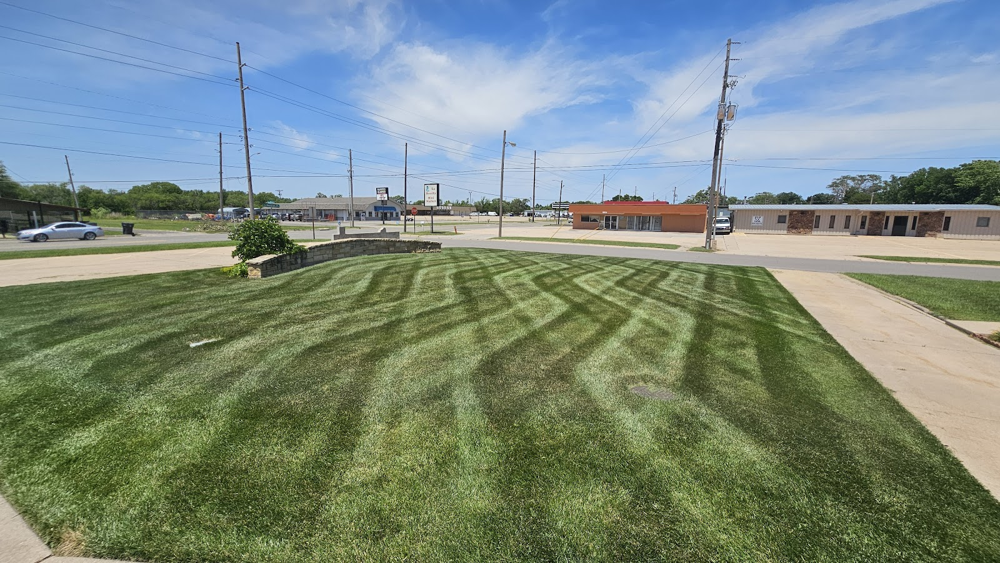
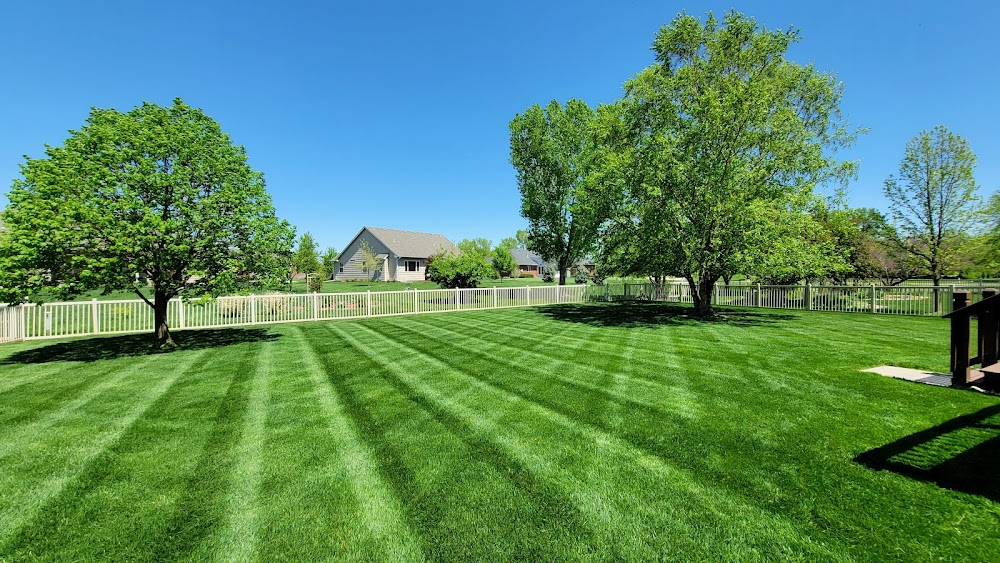
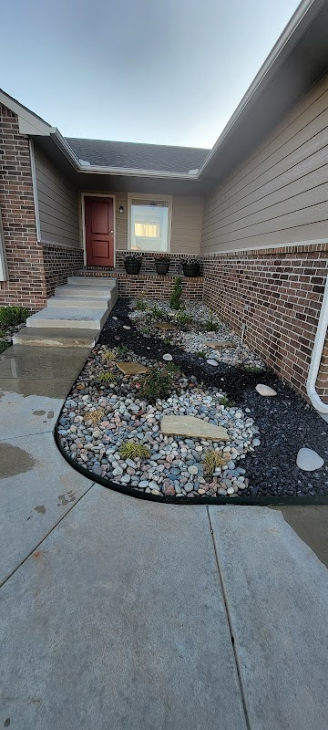
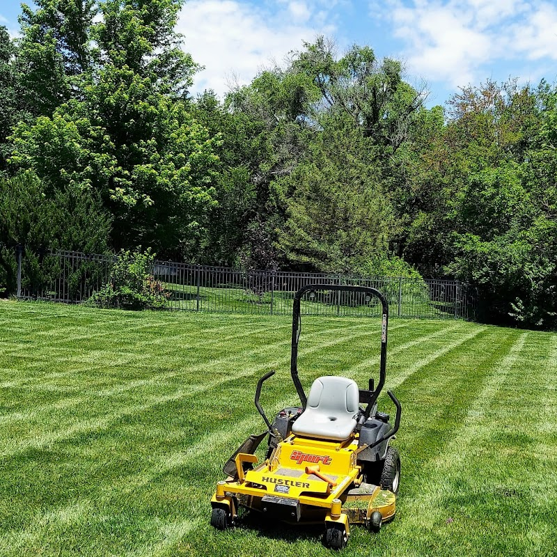

Sand Creek Outdoor Services keeps Newton & Harvey County lawns and yards sharp — dependable work that's earned a 4.9 from 15 customers.

4.9/5
15 reviews
Routine mowing, edging, weeding and clean-ups that keep your property sharp all season.
Beds, planting, mulch and yard improvements that lift the whole property.
Trimming, shaping and shrub care around the yard.
Seasonal and one-time clean-ups to reset an overgrown yard.



| Mon-Fri | 8:30 AM - 5:00 PM |
| Sat | 8:30 AM - 2:00 PM |
| Sun | Closed |